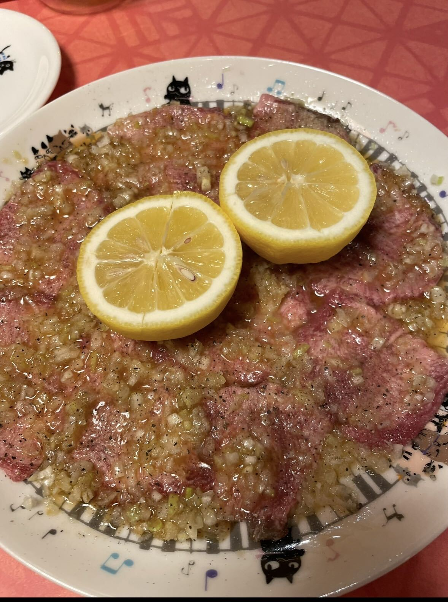
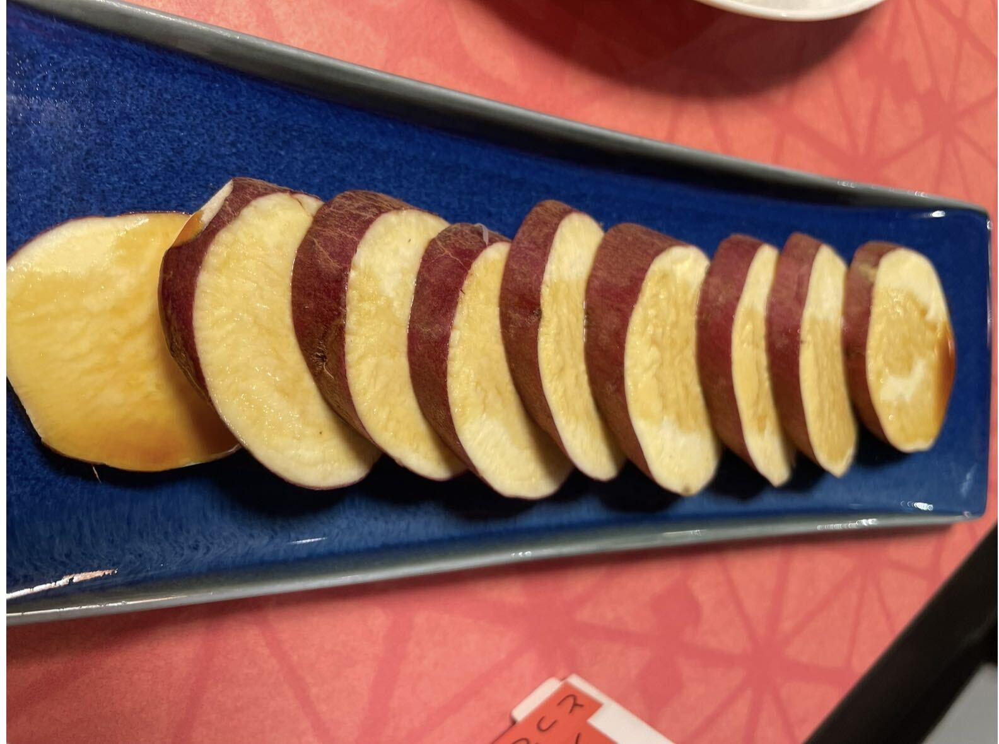
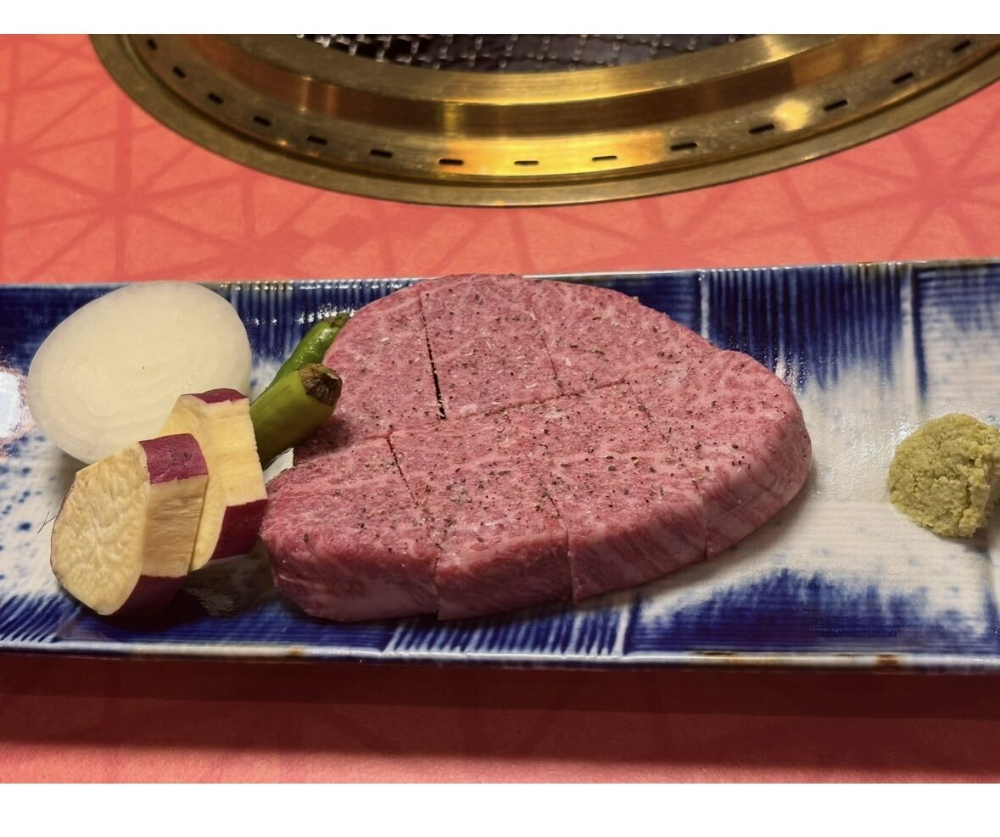
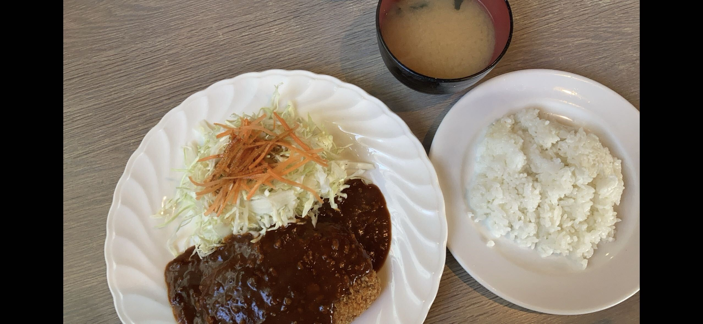
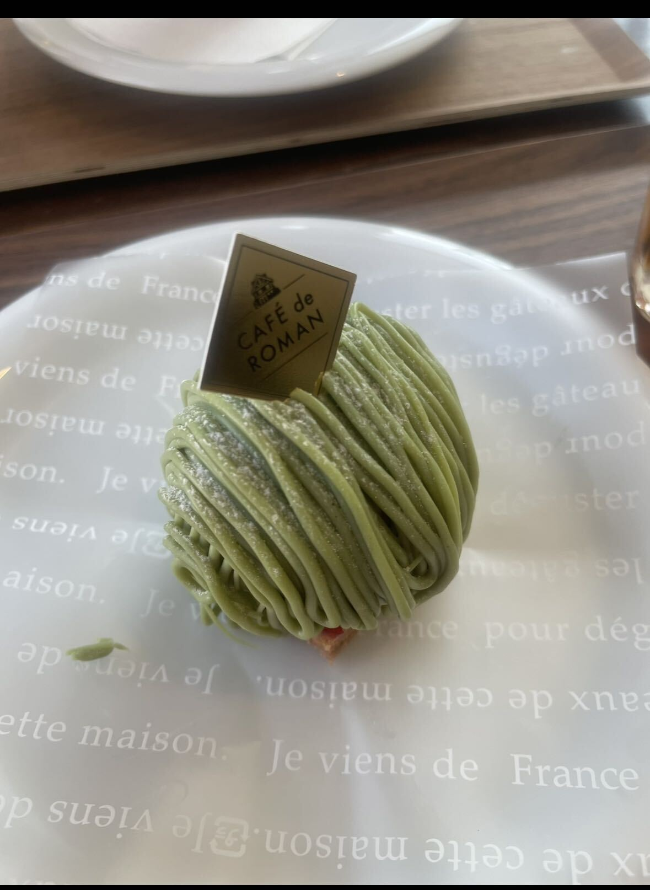
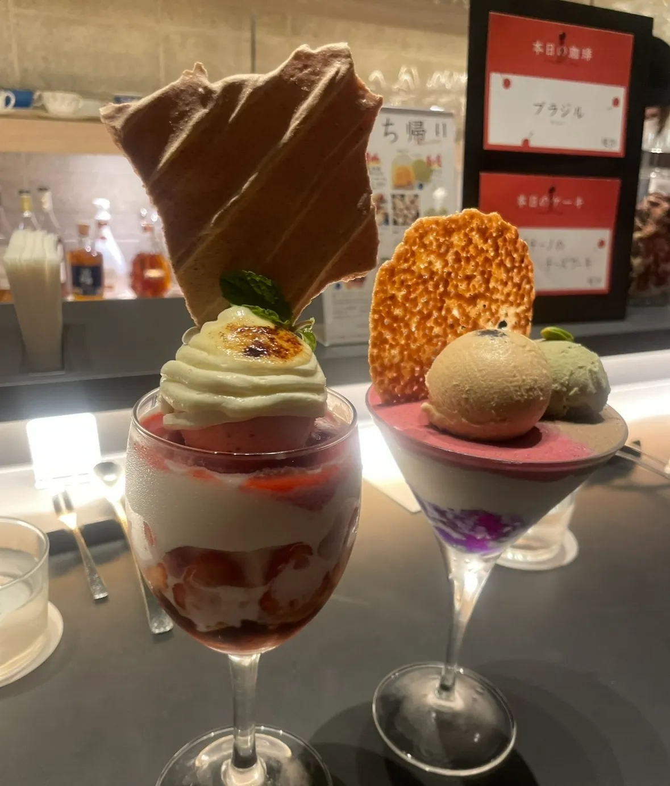
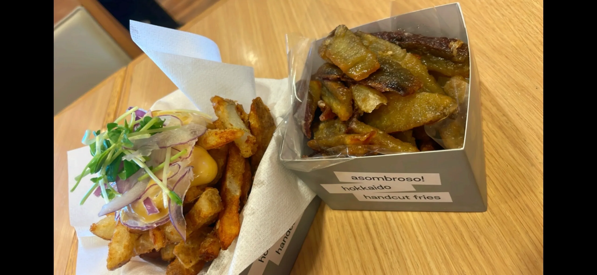
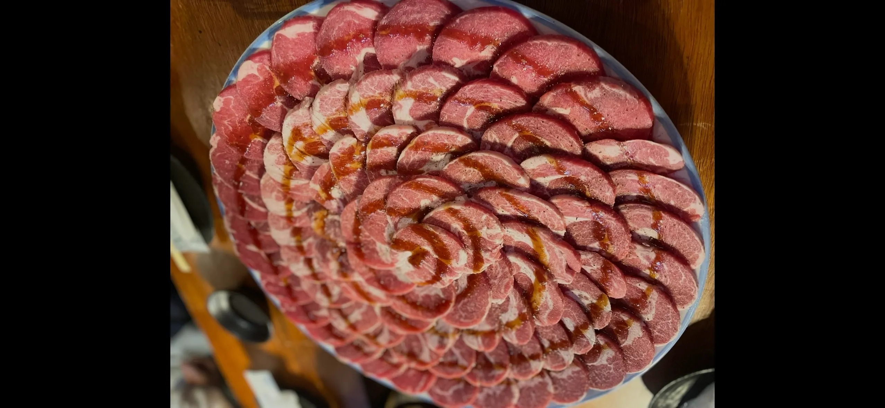
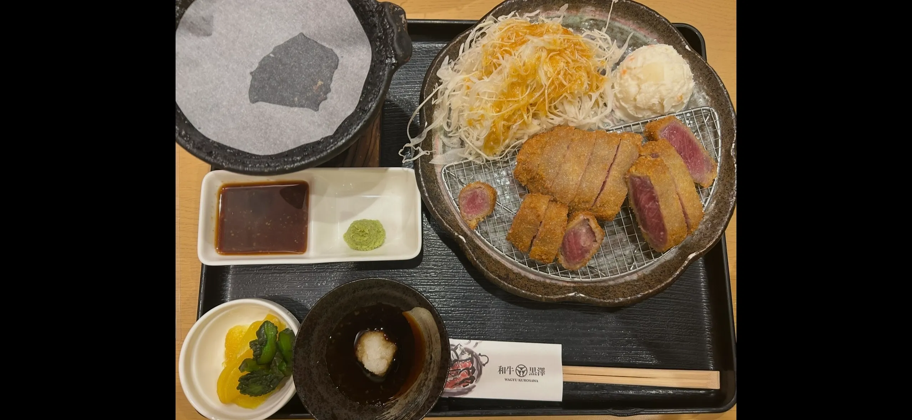
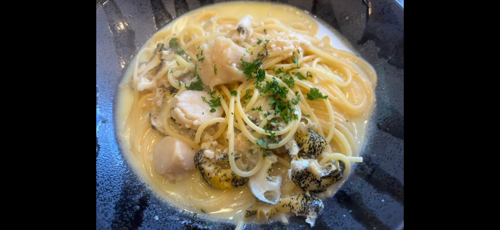

Favorite Gourmet
ヤキニク ネコスタイル



札幌市中央区大通西14-3-20
牛タンがたまらない 色々な部位があって、冒険も出来る このお肉の質をこの価格で食べれるのは奇跡
チキンハウス515

札幌市清田区北野7条3-5-15
ランチのみ営業で700円で定食を食べれる 700円なのにボリューミーで満腹に 種類も豊富で毎回悩んじゃう! お勧めは写真のハンバーグカツ
カフェドロマン

札幌市南区藻岩下2-2-47
ケーキがすごく美味しい デザートやドリンクのメニューが豊富 アフタヌーンティーでも有名! ケーキバイキングもあって幸せいっぱい
パフェ、珈琲、酒、佐々木

札幌市中央区南2条西1-8-2 アスカビル B1F
パフェ佐藤の姉妹店。
佐々木でしか食べる事の出来ないパフェがある。
必ず行列ができている。
イニシャル サッポロ

札幌市中央区南3条西5-36-1 F.DRESS五番街ビル 2F
種類が豊富で何度も行っても美味しいパフェが楽しめる。
並んでることも多い。
新助 アトレ新浦安店

千葉県浦安市入船1-1-1 アトレ新浦安
銀ダラから最強に美味しい！
千葉に行ったら夕食は毎回ここが良いと思える程！笑
asombroso! [アソンブロッソ]

千歳市美々 新千歳空港ターミナルビル2F
江別市牧場町14-1
そのためだけに千歳と江別に行けちゃう美味しさ!
ガーリックマヨネーズがオススメ!
2人でシェアが丁度良い!
Loft倶楽部

虻田郡ニセコ町曽我397-5
このジンギスカンの見た目も強烈で柔らかく美味しい！
冬は特に予約がビッチリで余裕もって予約必須！ (肉はジンギスカンのみ)
牛かつ小樽黒澤

小樽市色内1丁目11-10(本店)
ここの牛かつ以上に美味しい牛かつは食べた事ない。
ちょっと贅沢したくなる！
オステリア･デラカーサ

札幌市豊平区平岸一条19-2-45
このつぶとホタテのクリームパスタが絶品！
ニンニクも効いて癖になる。
中華料理 揚子江[ヨウスコウ]
![中華料理 揚子江[ヨウスコウ]](images/中華料理 揚子江.webp)
札幌市中央区大通西15-3
この信じられないトロたく。
メニューが豊富過ぎて決めるのにも時間かかる！全部あたり！